"No matter how much you travel, you still yearn for home. I want borsch!"
Andrey Danylko
Menu
Soups
Pickle soup
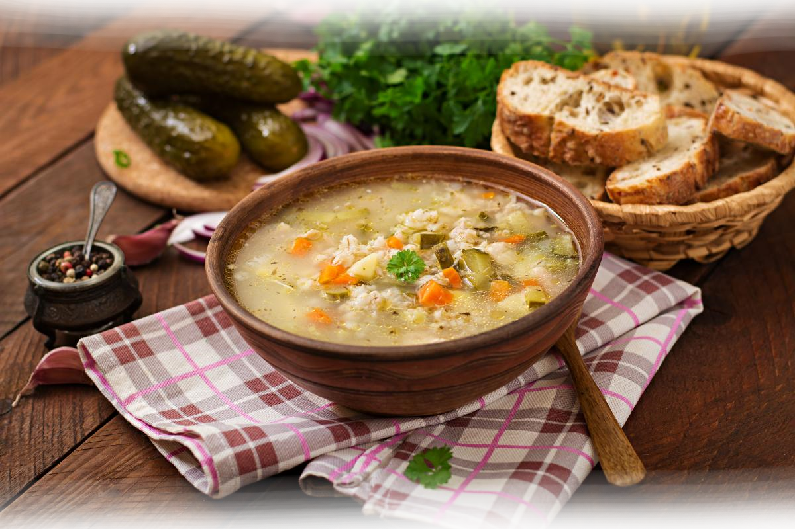Meat broth, pickles, potato, carrot, sour cream, onion, bay leaf, black pepper
Borsch
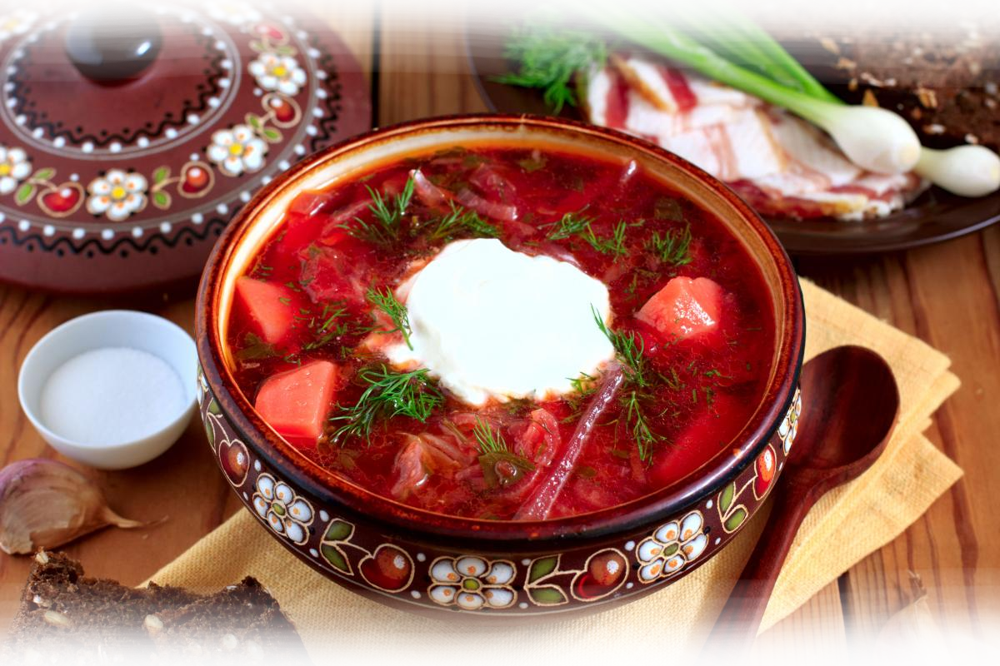Potato, carrot, beet, sour cream, onion, pork, vinegar, salo, paprika
Mushroom soup
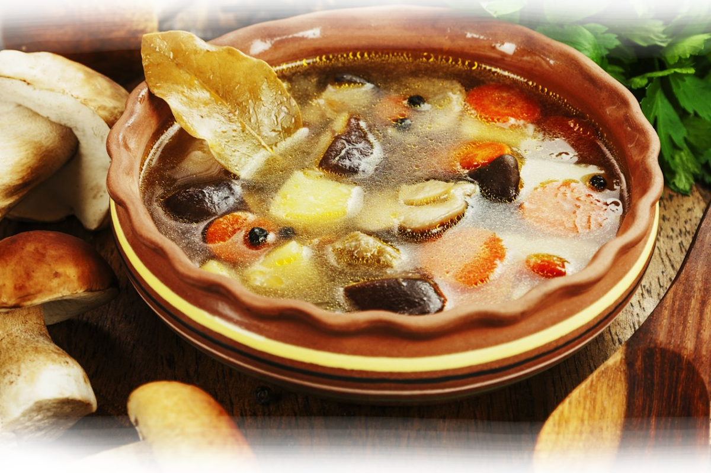White mashrooms, chanterelle, butter mushroom, potato, carrot, olives, beans
Snacks
Herring
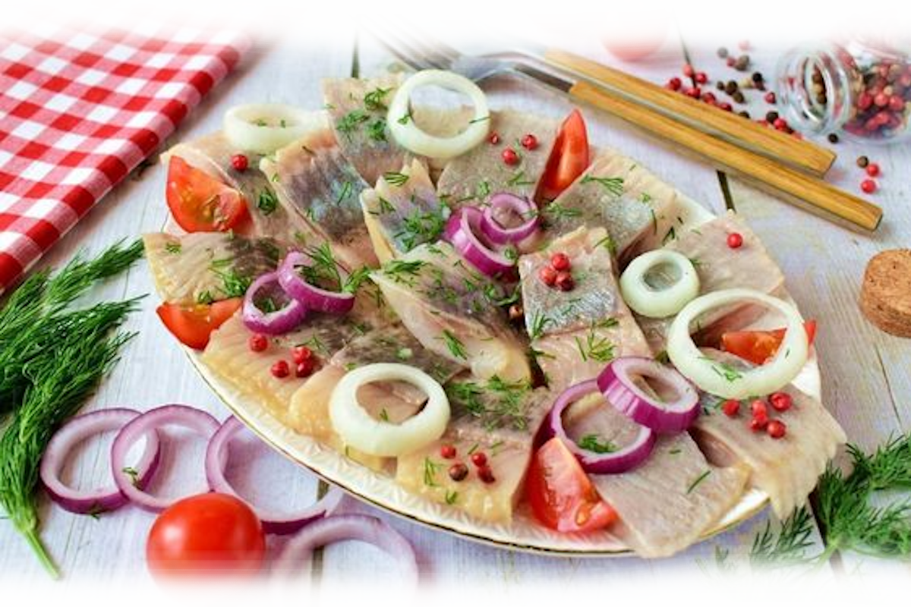Herring, white onion, pink onion, green pepper, lemon, tomatoes
Sausages
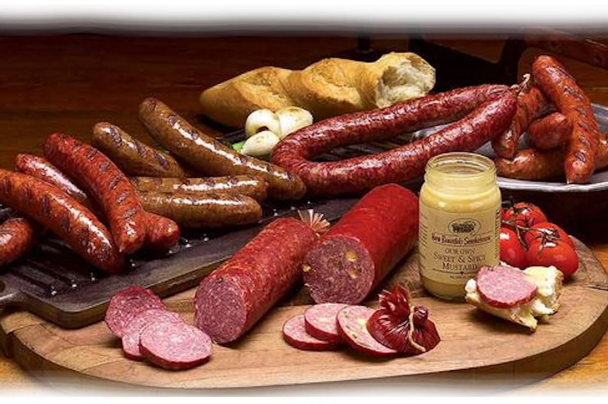Ukrainian sausages, boiled sausage, dried sausage, dried meat, mustard
Aspic
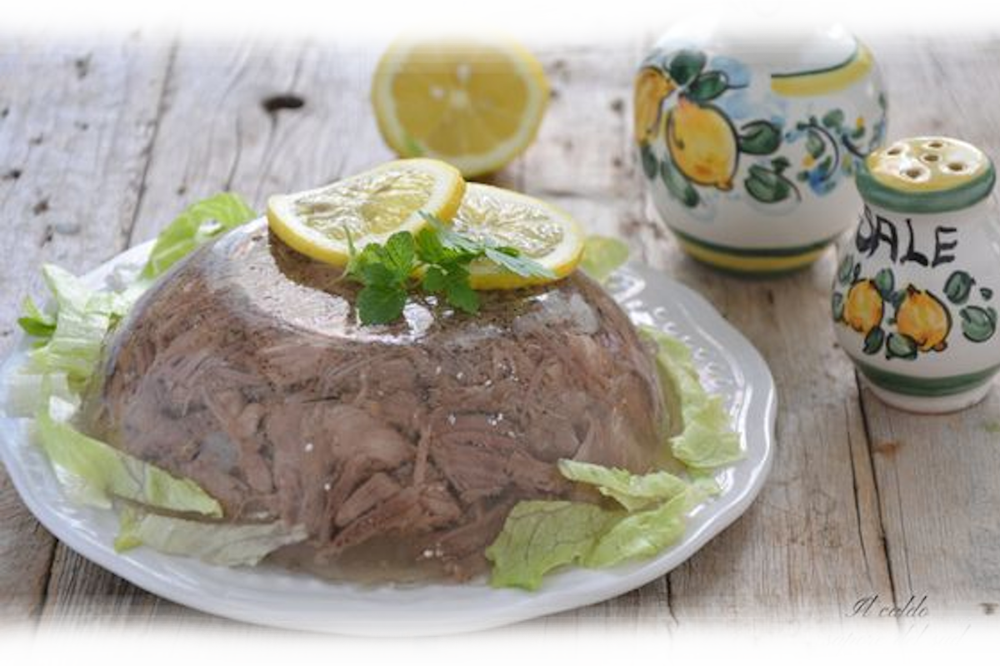Meat broth, chicken meat, green pepper, salad, lemon, mustard
Meat & Fish
Shank
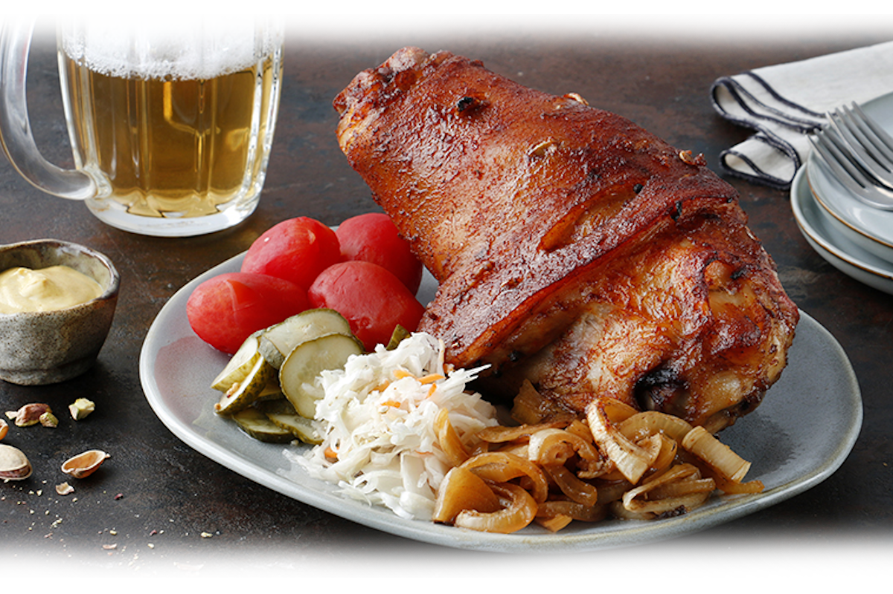Pork, tomato, cucumber, mushrooms, potato, beans, garlic souse
Stuffed pike
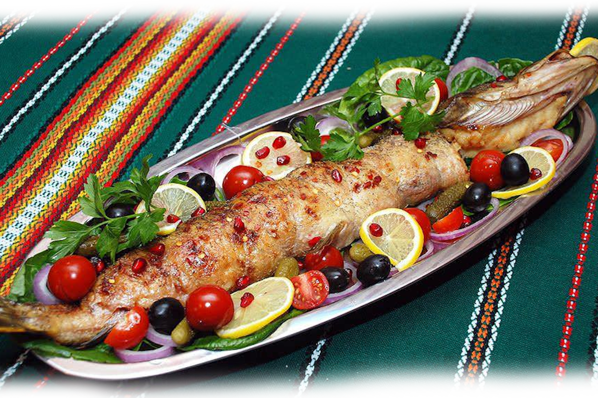Pike, lemon, tomato, pickle, bread, milk, black pepper, olives, parsley
Lamb ribs
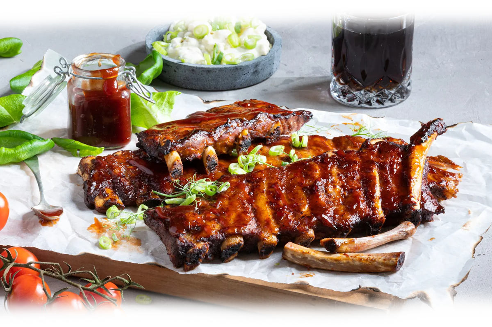Lamb ribs, oil, black pepper, garlic, parsley, tomato, ketchup, mustard
Desserts
Poppy pie
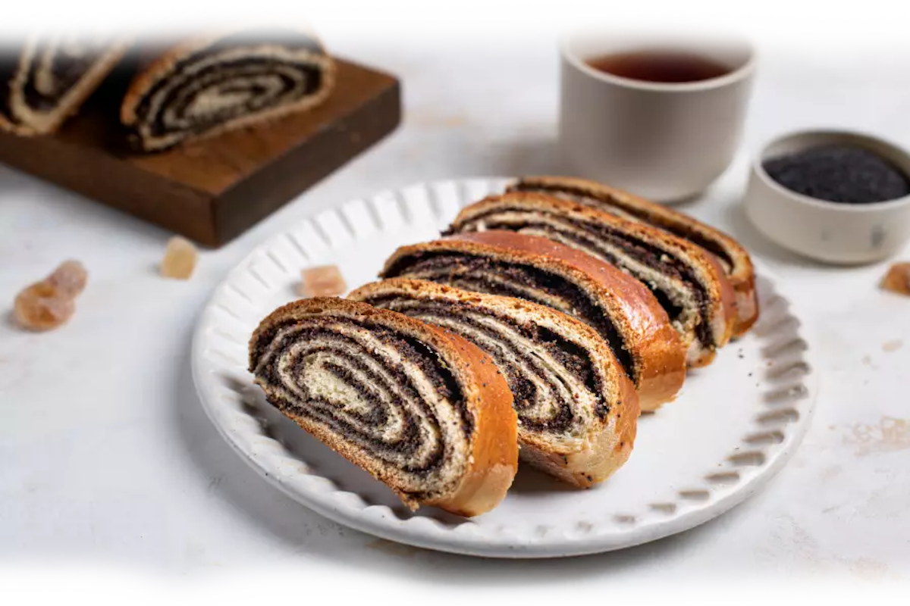Pike, lemon, wheat flour, milk, chicken eggs, sugar, honey butter, oil
Strudel
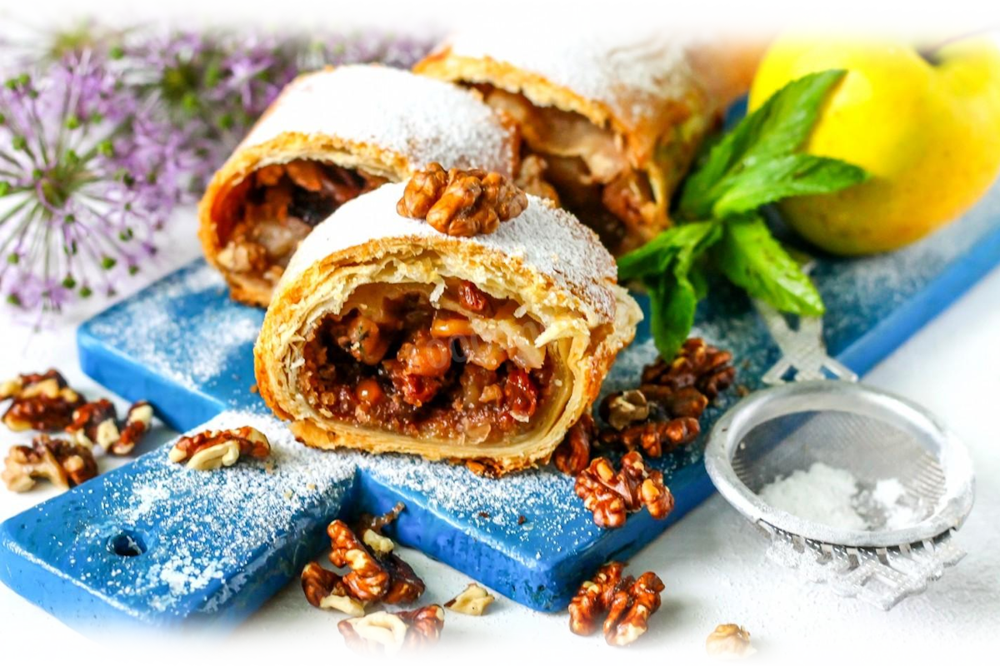Apples, walnut, wheat flour, oil, butter, sugar, powdered sugar, cinamon, raisins
Cherry pie
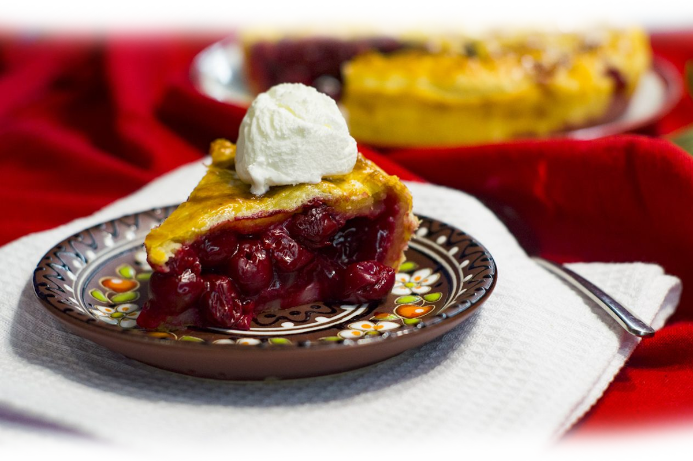Cherry, wheat flour, butter, oil, sugar, vanila, cinamon, powdered sugar
Drinks
Horilka
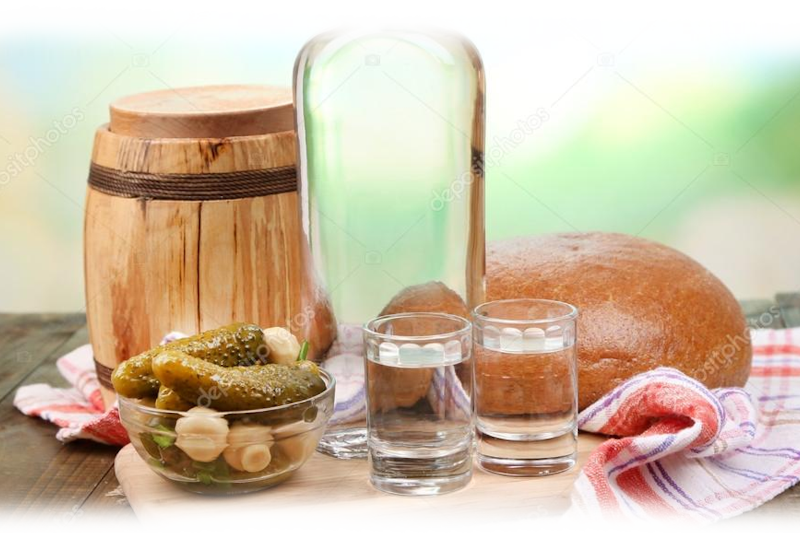| Honey | |
| Pepper | |
| Horseradish |
Wines
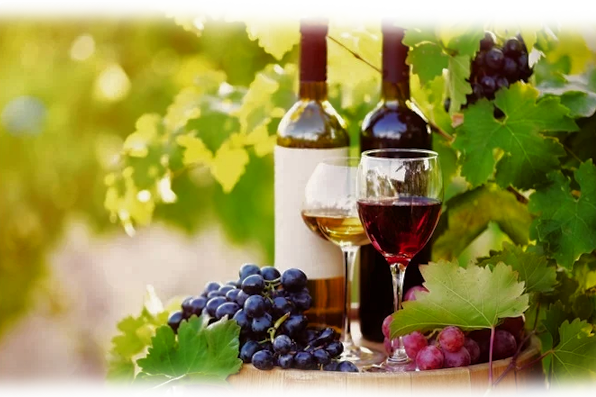| White | |
| Red | |
| Rose |
Sweet
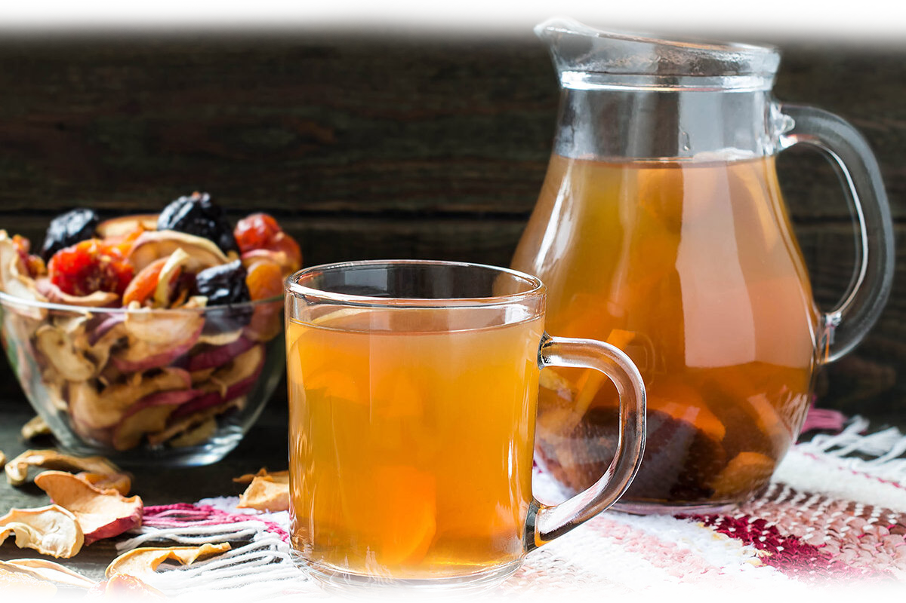| Compote | |
| Stewed fruit | |
| Morse |
Trademark
National Ukrainian Cuisine Restorant
Kyiv, St. Myshugi 1
Daily: 10:00 - 24:00
Made by Mykhailo | mihail.pulov.247@gmail.com
Recepts
Preheat the oven to 200C. In an ovenproof dish, bake the pork ribs for about 30 minutes or until a golden crust forms. Meanwhile, wash and roughly chop the celery root. There is no need to peel it. Cut up the carrots into chunks of about the same size as the celery pieces. Transfer the baked ribs into a large pot, add about 3 litres of water. Add the celery and carrot chunks, and half an unpeeled onion. Bring to a boil and cook over medium heat for about 30 minutes.
Make the sauteed vegetable base – this is what makes any borscht so flavorful. Dice the sweet bell pepper. Finely dice the tomatoes and the other half of the onion.
Heat the butter in a frying pan and cook the vegetables until they soften. Add 200ml tomato juice and about 2 tbsp tomato paste and cook for another 5-7 minutes.
Using a box grater, shred one of the beetroots. Add it to the sauteed vegetables and keep cooking for another 3-4 minutes.
Using a food processor with a juicing attachment, squeeze the juice out of the other beet (alternatively, you can simply grate it using the fine attachment on your box grater). Add the beet juice or purée and the vegetables into the pot with the ribs and celery, along with the allspice and bay leaves. Salt to taste.
Wash and peel 3-4 potatoes.
Dice them roughly and add into the pot with the rib broth. Cut the head of garlic in half and add to the pot.
Shred the cabbage and set it aside – we will add it to the borscht almost at the very end.
Once all of the ingredients have cooked through and are tender, add the shredded cabbage to the pot. Cook for 5 more minutes and take the borscht off the heat. Let it rest for at least half an hour before serving with sour cream and finely chopped dill. Keep the borscht in the fridge and remember that it will become even more delicious overnight.
Ingredients:
- 4 qt water
- 1 lb chicken thighs or drumsticks rised
- 1 large yellow onion pieled whole
- 2 tsp large carrots cleaned whole
- 2 tbsp gelatin
- 1 tbsp salt
- 1 tsp pepper
- 2 tbsp fresh parsley chopped
- 2 tbsp fresh dill chopped
Place the cooking pot with water, chicken, carrots, onion, salt and pepper to taste. All just together and bring up to boil. Turn heat on really low and let cook for 4 hours.
Remove carrots and onions. You can use carrots for decorations and you can throw away the onion. Remove chicken from pot. Clean chicken off the bone, break chicken into small pieces. In a 1/4 cup, add room temperature water and dissolve gelatin with water. Once its dissolved add to broth.
In flat pan place chicken, carrots, and sprinkle with parsley and dill. Pour cooking broth over the chicken and herbs. Let it stay in the fridge to firm up, this process could take about 6 hours.
Ingredients:
- 2 teaspoons unsalted butter
- 2 teaspoons extra-virgin olive oil rised
- 1/2 pound ground pork, veal, turkey, or chicken
- 1/2 small onion, minced/li>
- 1 garlic clove, minced
- Kosher salt
- Freshly ground black pepper
- 1/4 cup dry white win
- 1/4 cup freshly grated Parmigiano-Reggiano cheese
- 1 ounce mortadella, finely chopped
- 1 large egg, lightly beaten
- 1 ounce prosciutto, finely chopped
- Pinch of freshly grated nutmeg
In a skillet, melt the butter in the oil. Add the ground meat, onion, and garlic and season with salt and pepper. Cook over moderate heat, stirring to break up lumps, until the meat is cooked and the onion is tender, 10 minutes. Add the wine and cook over moderately high heat until evaporated, 4 minutes.
Scrape the mixture into a food processor and pulse until the meat is finely chopped. Scrape the ravioli filling into a bowl and let cool. Stir in the Parmigiano, mortadella, prosciutto, and nutmeg and season with salt and pepper. Stir in the beaten egg.